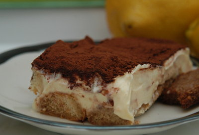

| Zutaten für 6-8 Personen: | |
| 3 | Eigelb |
| 100 g | Zucker |
| 1 Päckchen | Vanillezucker |
| 1 dl | Vollrahm |
| 500 g | Mascarpone |
| 2 dl | starker Espresso |
| 1/2 dl | Amaretto oder weisser Rum |
| 20-24 | Löffelbiskuits, je nach Form |
| Kakaopulver | |
Eigelb, Zucker und Vanillezucker zu einer fast weissen, dicken Creme aufschlagen; dies dauert auch mit dem Handrührgerät 8-10 Minuten.
Den Rahm sorgfältig unter den Mascarpone rühren, um ihn flüssiger zu machen (wird er zu stark geschlagen, kann er ausbuttern!)
Dann die Mischung sorgfältig unter die Eigelbcreme ziehen.
Den Espresso - nach Belieben mit Amaretto oder Rum gemischt - in eine flache Schale geben.
Ein Löffelbiskuit nach dem anderen nur rasch in die Flüssigkeit tauchen und den Boden einer Gratinform damit belegen. Die Hälfte der Mascarponecreme darüber verteilen und glatt streichen. Darauf wieder in Espresso getauchte Löffelbiskuits geben und alles mit der restlichen Creme decken.
Die Oberfläche dick mit Kakaopulver bestäuben und das Tiramisu vor dem Servieren mindestens 2 Stunden kalt stellen. Wenn möglich innerhalb von 12 Stunden geniessen.
Kochen 12/2004 Seite 68
Endlich komme ich dazu das Tirami Su auszuprobieren. Es ist schliesslich eines der populärsten Rezepte auf der Webseite, gemäss Statistik. Und prompt finde ich einen Fehler! Es stand 1 Eigelb aufschlagen. Das 1 war der erste Punkt vom abgeschriebenen Rezept nicht ein Eigelb! Und seit 4 Jahren schauen sich das die Leute an und keiner meldet es? Seltsam, seltsam.
Das Tirami Su ist mir prima gelungen. Es ist doch recht einfach in der Herstellung. F¨r meine Gratinform verträgt es aber sicher mehr Mascarpone Creme; ich konnte nicht richtig eine zweite Lage Kekse machen. RE 27.12.2008
@LINKBACK_TAG@ @WAKELOCK@